Prepare your ingredients. Cut the chicken and vegetables into small pieces. Cook the rice by steaming or boiling it.
Chop the onion and carrots into tiny pieces, roughly 1/4 inch (0.6 cm) if possible. The onion and carrot pieces should be the same approximate size as the individual peas are.
Image titled Make Omurice Step 1Bullet1
Cut the chicken into 1/2 inch (1.25 cm) cubes, as well.
Image titled Make Omurice Step 1Bullet2
The rice should be previously cooked before you fry it. Japanese rice or "sushi rice" works best, but if you are unable to find it, you can use any short-grain white rice.
Image titled Make Omurice Step 1Bullet3
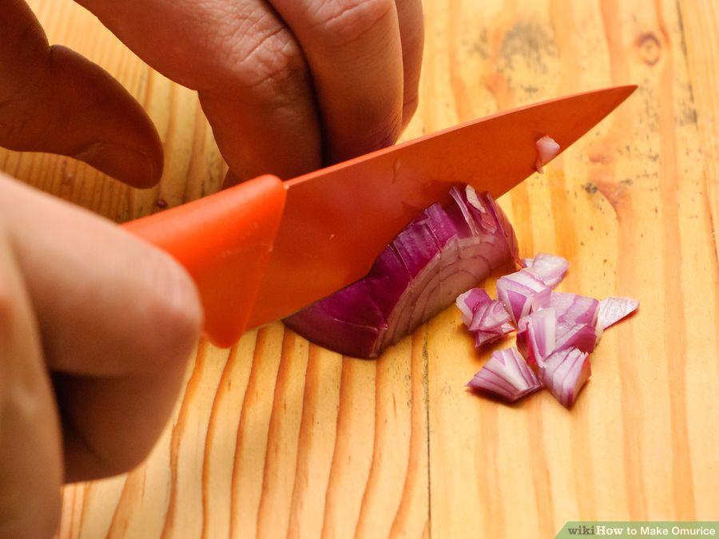
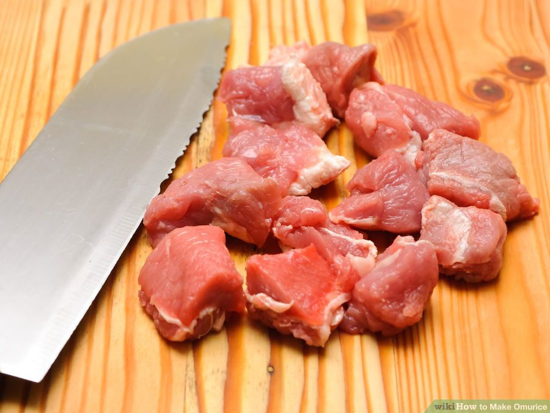
Heat the oil. Pour the oil into a medium skillet or wok. Set the pan on the stove over medium-high heat.
As the oil heats up, turn the pan to coat the entire bottom and all sides.
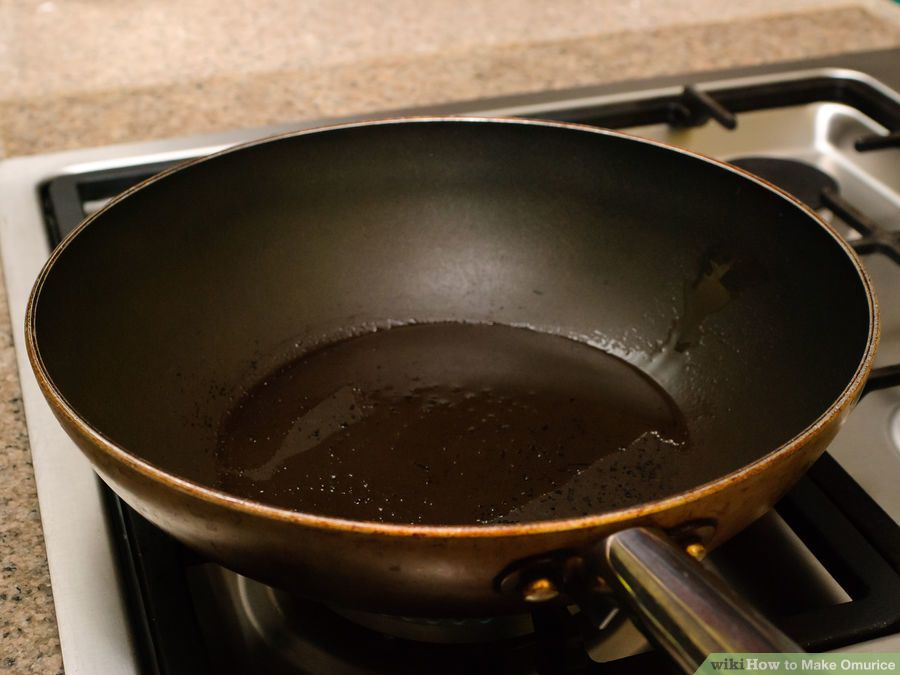
Fry the onion. Add the chopped onion to the hot oil. Cook, stirring frequently, until most of the onion has visibly softened. This should take about 2 to 4 minutes.
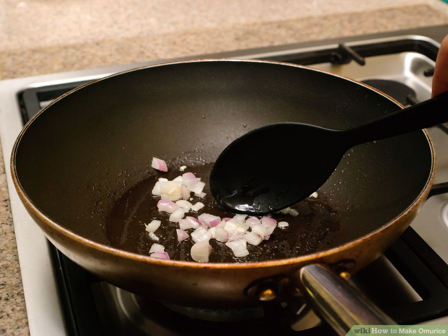
Brown the chicken. Add the chicken to the same pan and cook for several minutes, stirring frequently, until no visible pink remains on any side.
Chicken fried rice is the most traditional variation, but you can try other types of fried rice, as well. For instance, Korean versions of omurice typically use cubes of smoked ham and crab stick. Other meats should be added and cooked in the same basic manner as chicken.
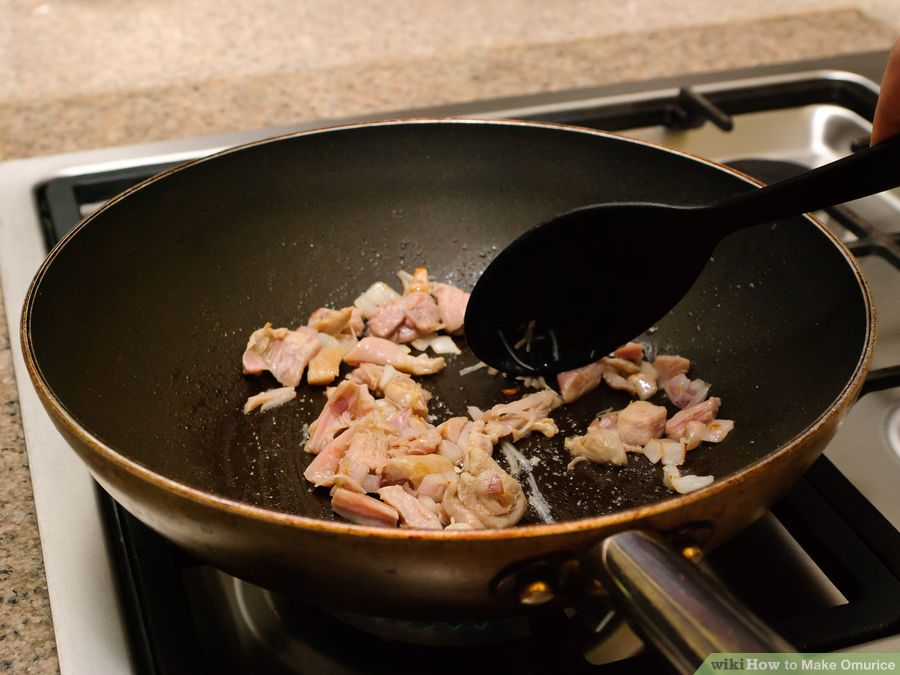
Toss in the vegetables, salt, and pepper. Add the carrots and peas to the pan. Sprinkle salt and pepper over the contents, then mix it all together until the vegetables appear evenly distributed throughout.
Make sure that the carrots and peas are tender before continuing. If the carrots have been properly diced, this should only take a few minutes.
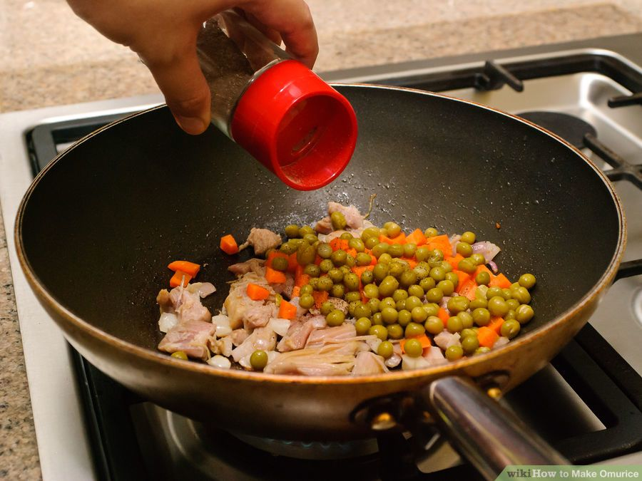
Add the rice. Dump the rice into the pan. Mix it into the chicken and vegetable blend until everything appears evenly distributed.
Since traditionally prepared Japanese rice is sticky, you may need to use your spatula or mixing spoon to break it up into smaller chunks before you can mix it into the chicken-vegetable blend.
You'll need to cook and stir the contents of the pan for approximately 2 to 3 minutes during this step. The rice should dry out slightly, but it shouldn't be burnt or crunchy.[1]
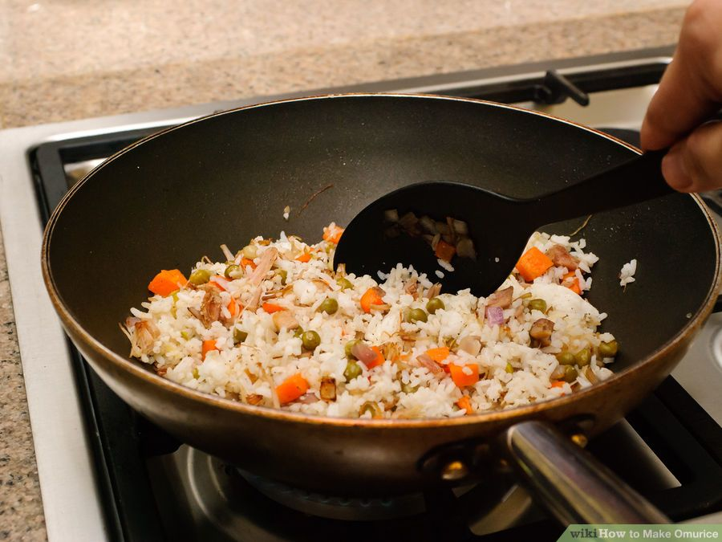
Stir in the ketchup and soy sauce. Add 1 Tbsp (15 ml) of ketchup and 1 tsp (5 ml) of soy sauce to the contents of the pan. Stir everything together until well combined.[2]
Taste the rice once everything has been added to the pan. If it seems bland, add more salt and pepper as desired to improve it to your own preferences.
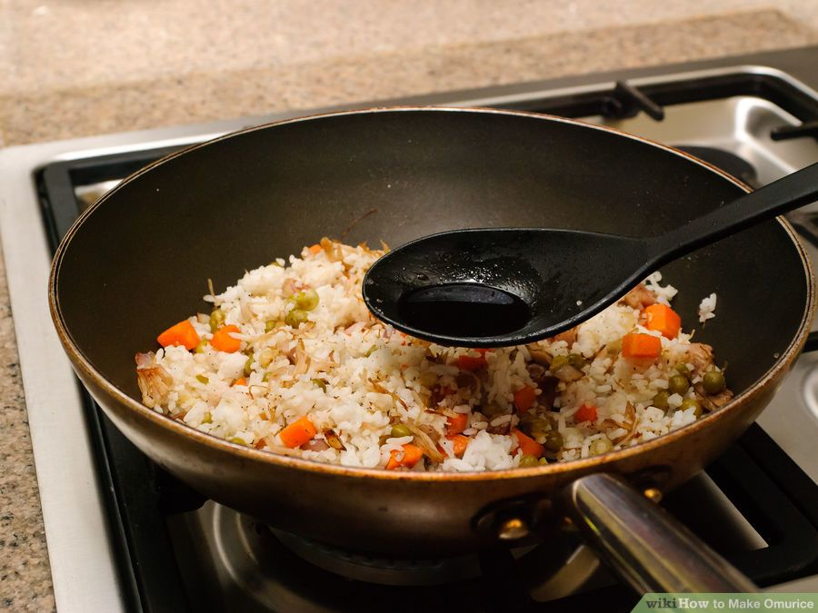
Set aside the fried rice. The fried rice should be ready at this point. Remove the pan from the heat and set it aside until you are ready to put together the omurice.
The chicken should be cooked through at this point, but just in case, it doesn't hurt to check. If the chicken still seems pink in the middle, continue cooking the fried rice until that pink has vanished. Cook at a low heat, stirring frequently, to prevent the rest of the ingredients from burning.
If you'd prefer to use one pan instead of two, you can transfer the fried rice to a separate plate instead of leaving it in the pan. Quickly wash the pan before using it for the omelette portion of the recipe.
PART 2 Cook the egg
Whisk together the eggs and milk. Crack the eggs into a small bowl and add the milk. Whisk the two together until evenly blended.
The egg mixture should be consistently colored throughout, with the yolks and whites well combined.
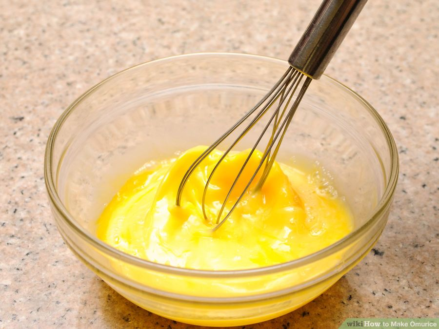
Heat the oil. Pour the oil into a clean skillet or wok. Place it on the stove over medium-high heat.
As the oil heats up, turn the pan so that the oil can coat the entire bottom and all sides.
Cook the egg until it sets. Pour half of the egg mixture into the hot pan. Lower the heat to medium-low and allow the egg to cook until it no longer appears runny.[3]
The egg mixture must evenly cover the bottom of the pan, so you may need to tilt the pan slightly immediately after pouring the eggs in.
You can stir the mixture a few times immediately after pouring it into the pan, but you should stop shortly before the liquid stops spreading over the bottom surface.
To help distribute the heat over the entire egg, cover the pan with a lid just before turning the heat down. If the lid is made of glass, the eggs should be done once the glass feels hot to the touch.
The prepared omelette will no longer be runny, but the top surface should still look moist. Do not wait for the top to completely dry out since, by that point, the bottom will likely be burnt.
Note that you will only use half of the egg mixture right now. The remaining half will be cooked in the same manner, but to minimize the number of pans you'll need to dirty, it's better to finish one omurice before cooking the rest of the eg
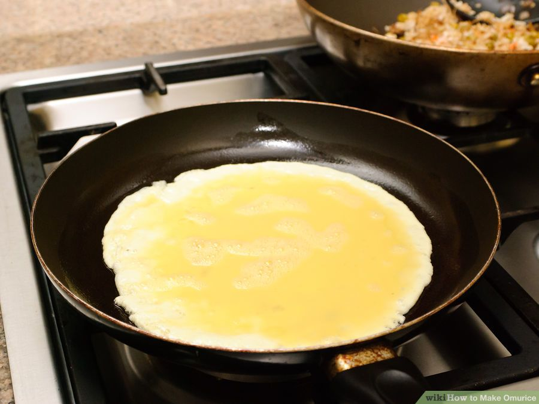
PART 3 Form the omurice
Fold Omurice
Pile the fried rice over the omelette. Spread half of the fried rice down the center of the set omelette. Keep the rice contained in a fairly skinny pile and do not spread it out to the far edges of the omelette.
Note that the remaining half of the fried rice will be used later with the remaining half of the egg mixture
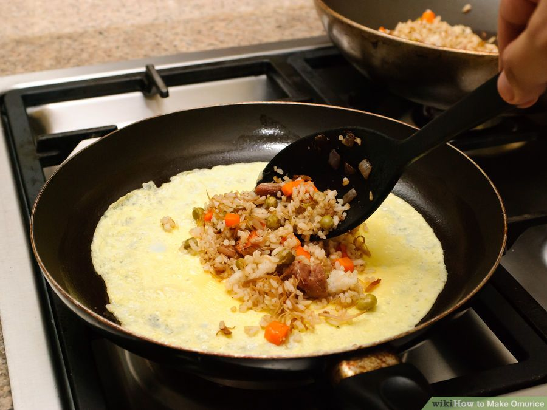
Fold up both sides. Use a spatula to gently lift both sides of the omelette in towards the middle. The ends should nearly meet and cover the fried rice in the process.
As you fold the sides, you should also use the spatula to gently and slowly move the entire omurice to the far edge of the pan. Doing so will make it easier to turn it onto a serving plate.
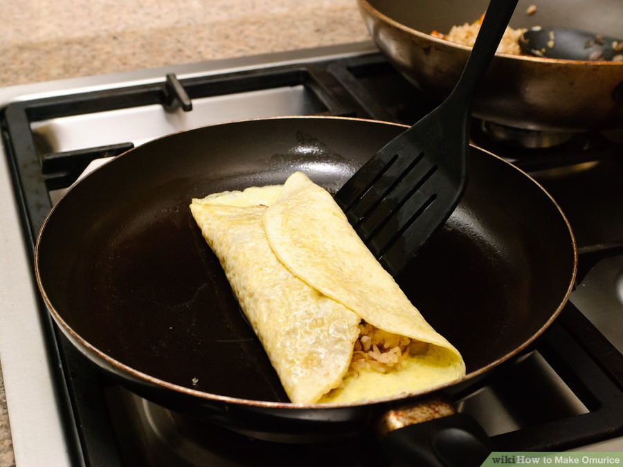
Flip the omurice onto a plate. Hold a serving plate directly beneath the pan. Using your other hand, quickly flip the pan to invert the omelette rice onto the plate.
You'll need to keep both the plate and pan steady to avoid making a mess. If you don't think you can handle the pan with one hand, ask someone else to hold the plate while you manipulate the pan.
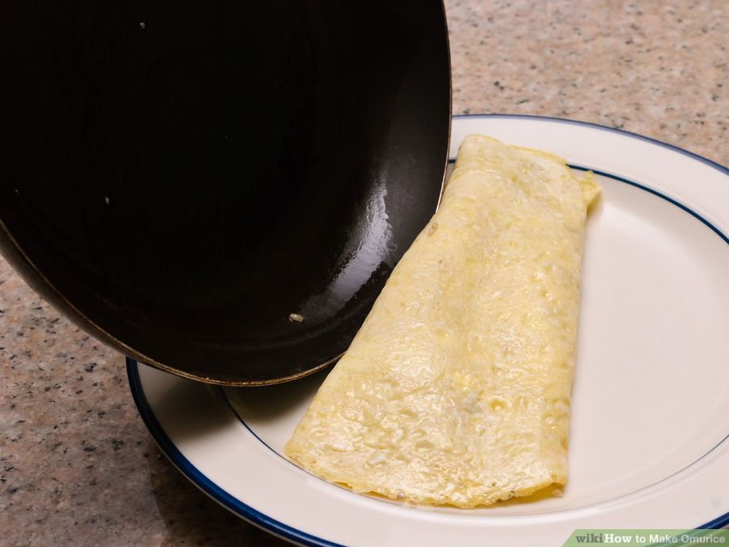
Shape the omurice. Cover the omurice with a clean paper towel. Using your hands, gently maneuver the omurice into the shape of an eye or American football.
You need to do this while the omurice is still hot if you want the shape to form properly. If you wait until it cools, the egg may tear when you try to manipulate it.
Remove the paper towel as soon as you finish shaping the omurice.
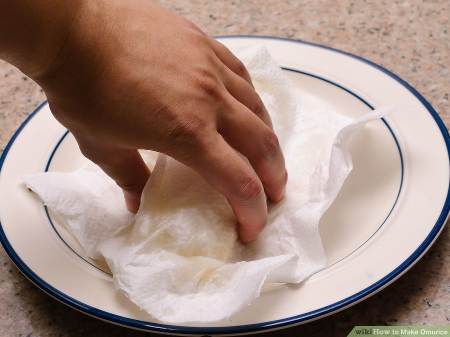
Repeat with the remaining egg and rice. Form another identical omelette with the remaining egg mixture. Pile the rice inside as before, then turn the entire omurice out onto a second serving plate.
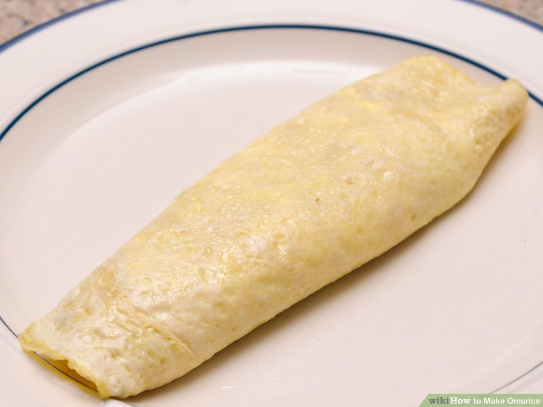
Enjoy. For the best flavor and texture, you should serve and eat the omurice while it is still hot.
Before eating it, decorate each serving of omurice by drizzling it with ketchup.
Mounted Omurice
Place the omelette in a deep bowl. Carefully slide the omelette out of the pan and into a deep bowl. Center the omelette into the bowl, carefully pressing down on it with the spatula.
Work quickly to manipulate the omelette while the egg is still hot. If the egg cools too much, it'll be more likely to break as you mold it into the shape of the bowl.
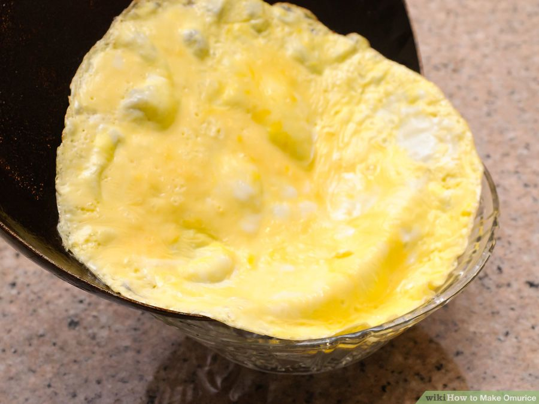
Spoon in the rice. Scoop half of the rice mixture into the center of the omelette in your bowl.
Like the remaining egg mixture, the remaining half of the fried rice mixture will be used later for the second serving of omurice.
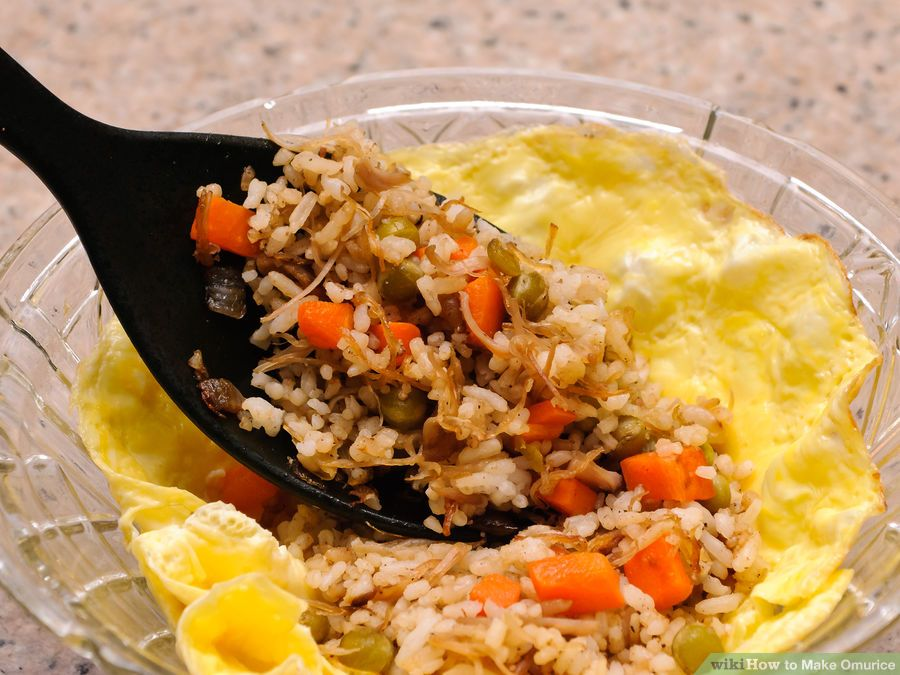
Invert the omurice onto a plate. Place a plate upside-down over the top of the bowl. Carefully yet quickly flip both the plate and the bowl, then remove the bowl.[4]
As you flip the two dishes, you'll also flip the omurice. The egg should now cover the fried rice in the form of a neat mound.
Make sure that you have a good grip on both dishes as you invert them. This can be a bit tricky, and if you aren't careful, the dishes may separate during the flip and cause the egg and rice to scatter everywhere.
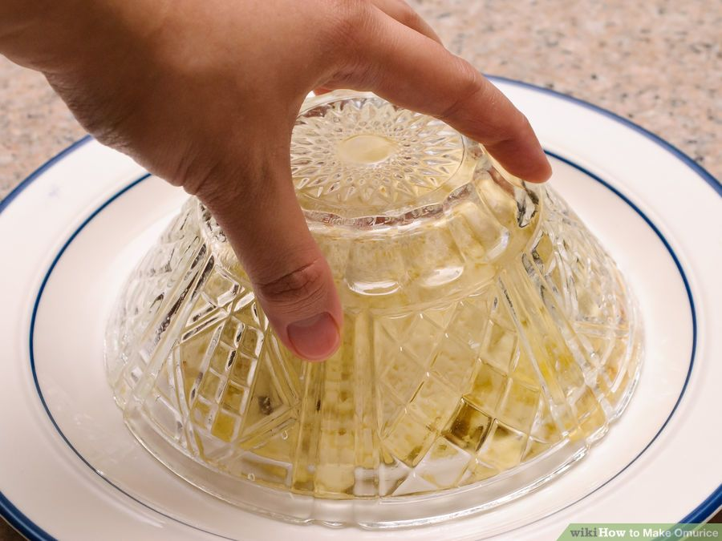
Split the egg. Carefully cut an "X" across the top of the mounded omurice. The cut should be deep enough to pierce through to the other side of the egg, revealing the fried rice beneath.
Note that you can also slice the omurice down the center instead of cutting an "X" into it. Do not slice through the ends, however. You should split the egg to reveal the rice, but you do not want to cut the omurice completely in half.[5]
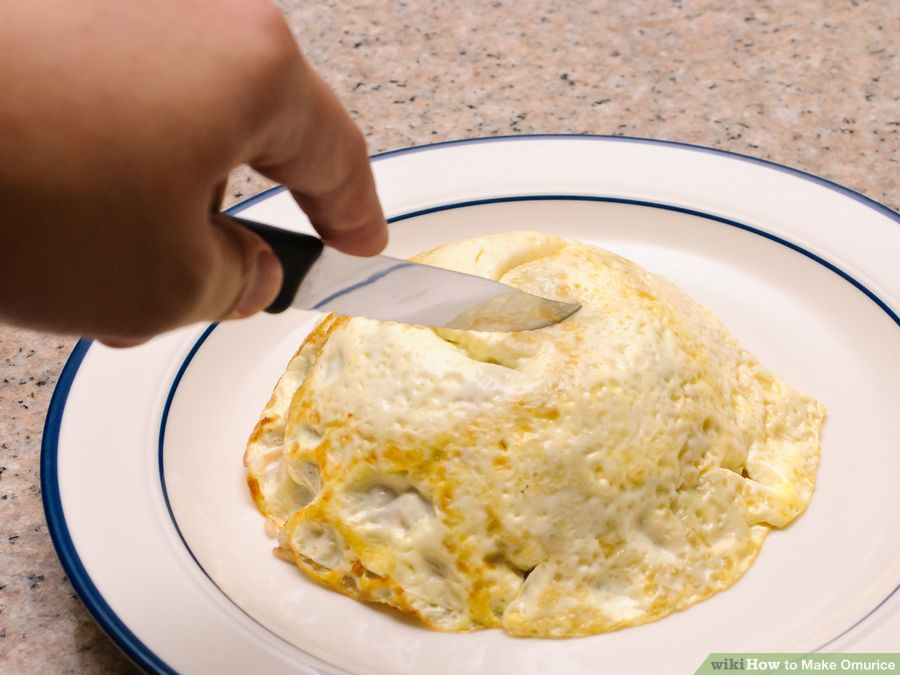
Repeat with the remaining egg and rice. Cook the remaining egg mixture in the same way you cooked the first half. Once the second omelette is ready, combine it with the remaining fried rice and create a second serving of omurice.
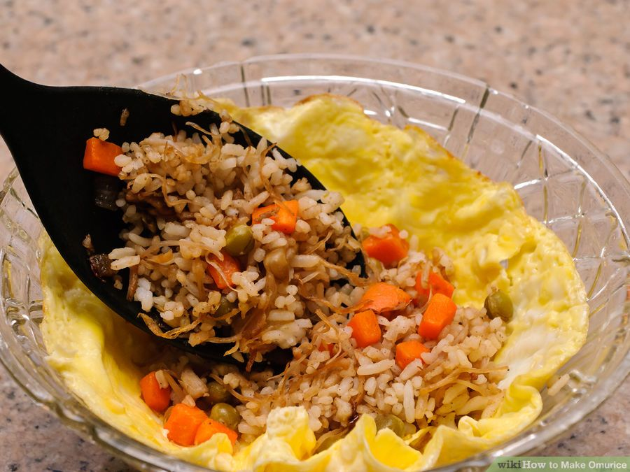
Enjoy. Serve and eat the omurice while it is still hot to enjoy the best flavor and texture.
For a more traditional appearance and taste, drizzle ketchup over the omurice in any design or pattern you'd like before eating it.